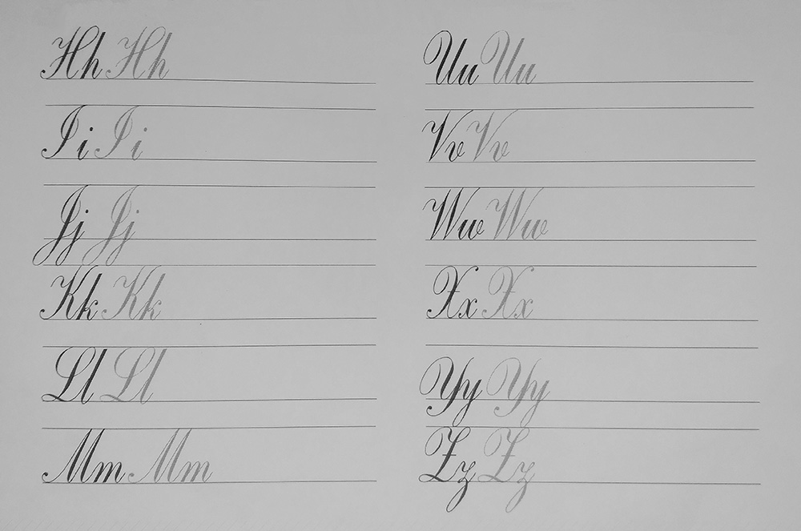

Para crear un trazo de arriba hacia abajo (grueso), se ejerce más presión y las palas flexibles de la plumilla se abren para dejar salir más tinta. En cambio, cuando se trata de un trazo de abajo hacia arriba (fino), las palas se cierran y no sale tanta tinta. El ángulo de escritura idóneo es de 45° o 55°.
Algunas letras se construyen en un único trazo, pero la gran mayoría se ejecutan en dos o más. Tras haber escrito un trazo, levanta la pluma y después continúa con el siguiente trazo. Recuerda que las letras minúsculas se encuentran enlazadas entre sí. Para hacer ligaduras, alarga el trazo de la letra, levanta la pluma y vuelve al papel para hacer la siguiente letra.
